ChatGPT

Você disse:
<!DOCTYPE html>
<html lang="pt-br">
<head>
    <meta charset="UTF-8">
    <meta name="viewport" content="width=device-width, initial-scale=1.0">
    <meta http-equiv="X-UA-Compatible" content="IE=edge">
    <link rel="shortcut icon" href="https://img.freepik.com/vetores-premium/um-icone-de-microfone-de-alta-tecnologia-como-um-logotipo-da-empresa-de-som_992397-19749.jpg" type="image/x-icon">
    <title>Microfones Profissionais</title>

    <!-- Fonte do Google -->
    <link href="https://fonts.googleapis.com/css2?family=Roboto:wght@400;700&display=swap" rel="stylesheet">

    <!-- CSS do Slick Carousel -->
    <link rel="stylesheet" href="https://cdnjs.cloudflare.com/ajax/libs/slick-carousel/1.8.1/slick.min.css" />
    <link rel="stylesheet" href="https://cdnjs.cloudflare.com/ajax/libs/slick-carousel/1.8.1/slick-theme.min.css" />

    <style>
        /* Reset básico */
        * {
            margin: 0;
            padding: 0;
            box-sizing: border-box;
        }

        body {
            font-family: 'Roboto', sans-serif;
            background-color: #101f2d; /* Azul escuro */
            color: #fff;
            line-height: 1.6;
        }

        h1, h2, h3 {
            color: #56b870; /* Verde escuro */
        }

        .container {
            width: 90%;
            max-width: 1200px;
            margin: 0 auto;
            padding: 20px;
        }

        header {
            background-color: #0d1822; /* Fundo azul ainda mais escuro */
            padding: 50px 0;
            text-align: center;
            border-bottom: 3px solid #56b870;
        }

        header h1 {
            font-size: 3rem;
            margin-bottom: 10px;
        }

        header p {
            font-size: 1.2rem;
            font-weight: 300;
        }

        section {
            padding: 50px 0;
        }

        /* Estilo do Carrossel */
        .carousel {
            padding: 50px 0;
            text-align: center;
        }

        .carousel-slider img {
            width: 90%; /* Imagem central ocupando 90% da largura */
            height: auto;
            border-radius: 5px;
            transition: transform 0.5s ease, opacity 0.5s ease; /* Transição suave para o zoom */
        }

        /* Zoom suave na imagem exibida */
        .slick-center img {
            transform: scale(1.1); /* Zoom um pouco maior para o centro */
            z-index: 2;
        }

        .slick-slide {
            opacity: 0.5; /* Imagens não centrais são menos opacas */
            transform: scale(0.8); /* Imagens laterais são menores */
            transition: transform 0.5s ease, opacity 0.5s ease; /* Transição suave */
        }

        .slick-center {
            opacity: 1; /* Imagem central com opacidade completa */
            transform: scale(1); /* Imagem central maior */
        }

        .slick-prev:before,
        .slick-next:before {
            color: #56b870; /* Verde escuro */
        }

        .slick-dots li button:before {
            color: #56b870;
        }

        .slick-dots li.slick-active button:before {
            opacity: 1;
            color: #fff;
        }

        /* Botão Fixo do WhatsApp */
        .whatsapp-float {
            position: fixed;
            bottom: 20px;
            right: 20px;
            background-color: #25d366;
            color: white;
            border-radius: 50px;
            padding: 10px;
            box-shadow: 2px 2px 5px rgba(0, 0, 0, 0.3);
            z-index: 100;
        }

        .whatsapp-float img {
            width: 50px;
            height: 50px;
        }

        /* Footer */
        footer {
            background-color: #0d1822;
            text-align: center;
            padding: 20px 0;
            border-top: 3px solid #56b870;
            margin-top: 50px;
        }

        footer p {
            font-size: 0.9rem;
            margin-bottom: 10px;
        }

        footer .social-icons {
            margin-top: 10px;
        }

        footer .social-icons img {
            width: 40px;
            margin: 0 30px;
            vertical-align: middle;
        }

        /* Responsividade */
        @media screen and (max-width: 768px) {
            .carousel-slider img {
                max-width: 100%;
            }

            header h1 {
                font-size: 2rem;
            }

            header p {
                font-size: 1rem;
            }
        }
    </style>
</head>
<body>

    <header>
        <div class="container">
            <h1>Microfones Profissionais</h1>
            <p>Soluções para áudio de qualidade superior</p>
        </div>
    </header>

    <!-- Carrossel de Microfone Pro-X -->
    <section class="carousel">
        <div class="container">
            <h2>MICROFONE SHURE DUPLO FACIAL GLXD4 AURICULAR</h2>
            <div class="carousel-slider pro-x">
                <div>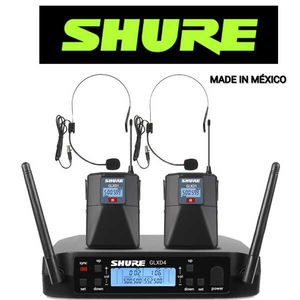</div>
                <div>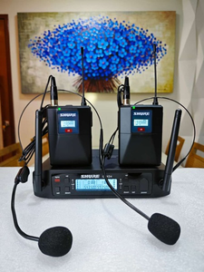</div>
                <div>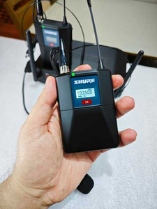</div>
            </div>
        </div>
    </section>

    <!-- Carrossel de Microfone LiveMax -->
    <section class="carousel">
        <div class="container">
            <h2>MICROFONE PROFISSIONAL DUPLO SHURE BETA58 GLXD4</h2>
            <div class="carousel-slider live-max">
                <div></div>
                <div>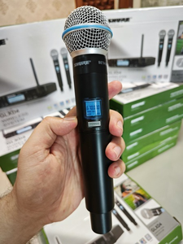</div>
                <div>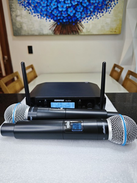</div>
            </div>
        </div>
    </section>

    <!-- Carrossel de Microfone StudioOne -->
    <section class="carousel">
        <div class="container">
            <h2>Shure GLXD4 DUPLO Profissional</h2>
            <div class="carousel-slider studio-one">
                <div>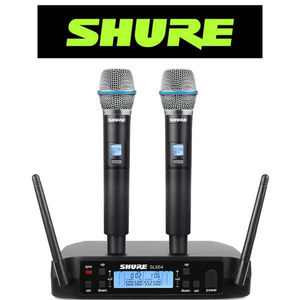</div>
                <div>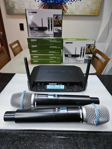</div>
                <div>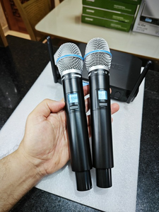</div>
                
            </div>
        </div>
    </section>

    <!-- Carrossel de Microfone PowerVoice -->
    <section class="carousel">
        <div class="container">
            <h2>MICROFONE PROFISSIONAL SENNHEISER DUPLO</h2>
            <div class="carousel-slider power-voice">
                <div>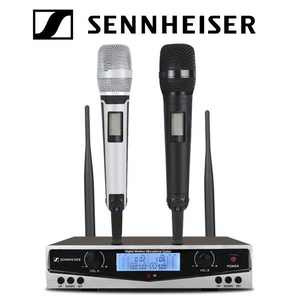</div>
                <div>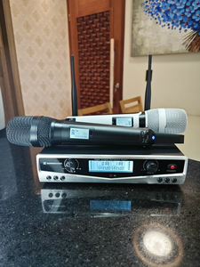</div>
                <div>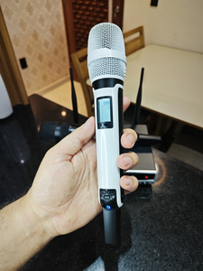</div>
            </div>
        </div>
    </section>

    <!-- Footer -->
    <footer>
        <p>Entre em contato: 83987610128</p>
        <div class="social-icons">
            <a href="https://facebook.com" target="_blank"></a>
            <a href="https://www.olx.com.br/perfil/alisson-store-watch-da5ec071" target="_blank"></a>
        </div>
    </footer>

    <!-- Botão Fixo do WhatsApp -->
    <a href="https://wa.me/5583987610128" class="whatsapp-float" target="_blank">
        
    </a>

    <!-- Script do jQuery e Slick Carousel -->
    <script src="https://code.jquery.com/jquery-3.6.0.min.js"></script>
    <script src="https://cdnjs.cloudflare.com/ajax/libs/slick-carousel/1.8.1/slick.min.js"></script>

    <script>
        $(document).ready(function(){
            // Inicialização do carrossel para cada modelo de microfone
            $('.pro-x, .live-max, .studio-one, .power-voice').slick({
                dots: true,
                infinite: true,
                speed: 600,
                slidesToShow: 1,
                centerMode: true,
                variableWidth: true,
                arrows: true,
                adaptiveHeight: true,
                focusOnSelect: true,
                autoplay: false
            });
        });
    </script>

</body>
</html>